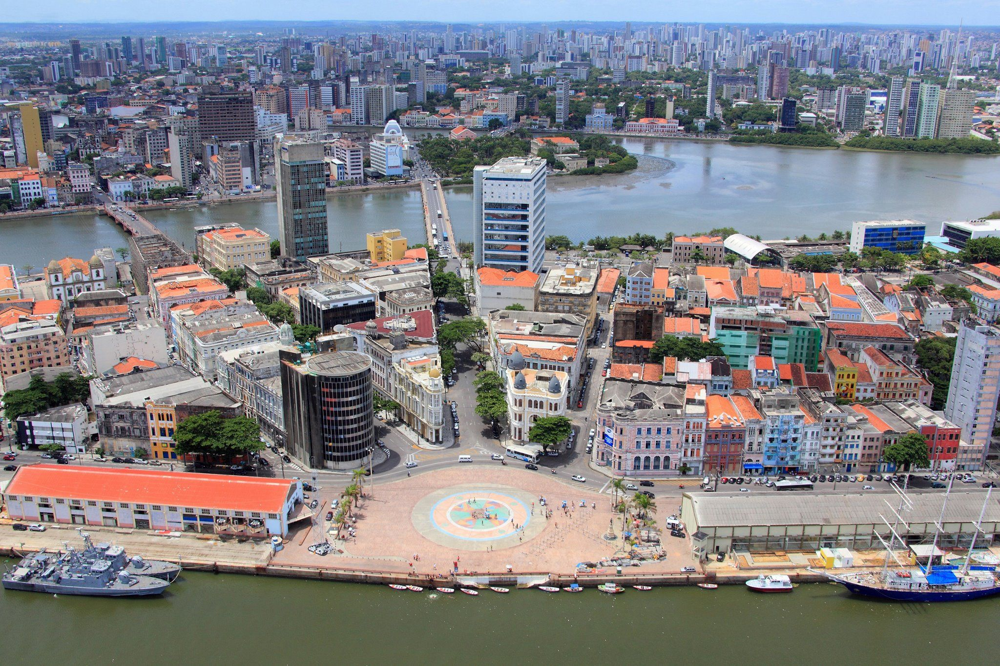
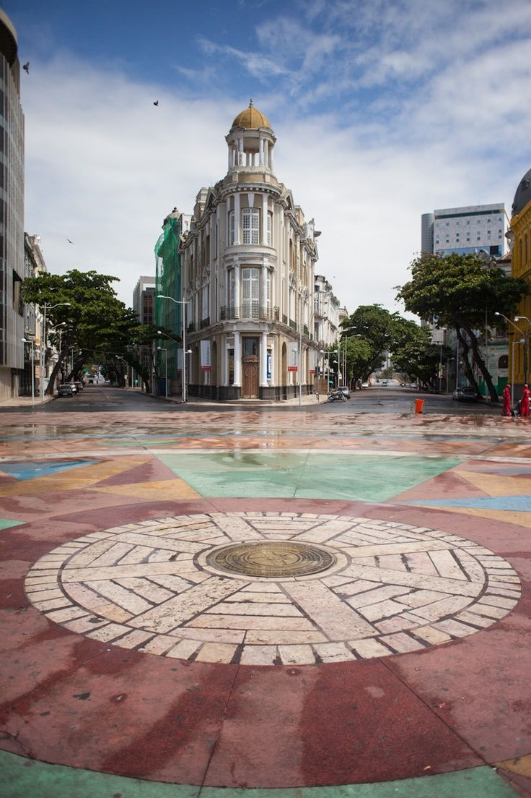
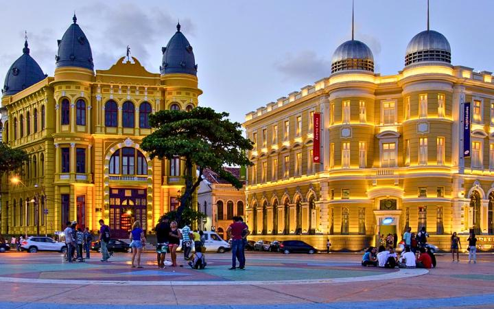
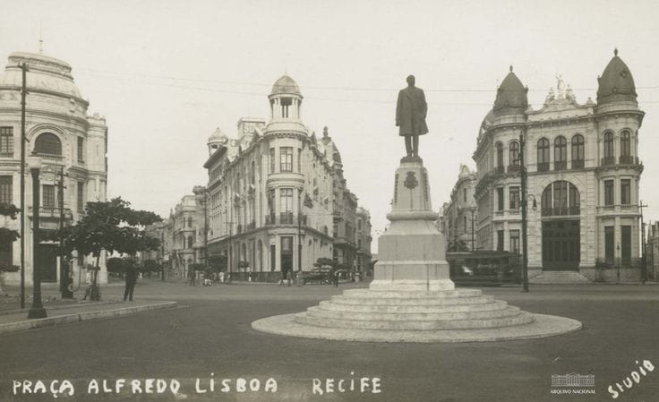
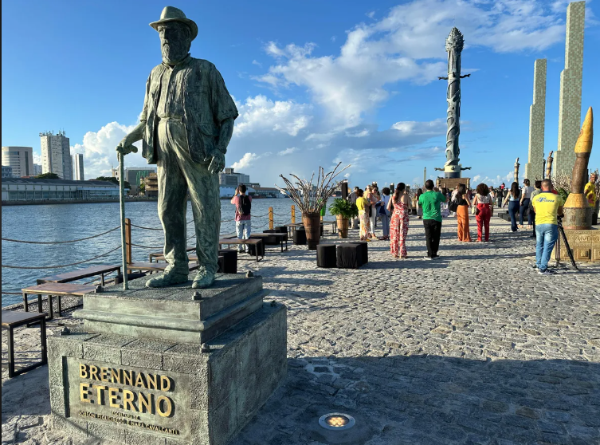

📍 Localização
Está situado no bairro do Recife Antigo, uma das regiões mais visitadas da cidade.

Um dos pontos turísticos mais famosos do Nordeste brasileiro, onde cultura, história e beleza se encontram.
Saiba MaisO Marco Zero, localizado na Praça Rio Branco, representa o ponto inicial das rodovias de Pernambuco e é considerado um dos principais símbolos da cidade do Recife.
Além de sua importância histórica, o local recebe milhares de turistas durante todo o ano e se transforma em um grande palco durante o Carnaval do Recife.

Está situado no bairro do Recife Antigo, uma das regiões mais visitadas da cidade.
É um dos principais palcos das apresentações durante o Carnaval, reunindo milhares de pessoas.
O piso da praça possui um grande painel artístico criado por Cícero Dias.
Confira algumas imagens que mostram a beleza e a importância histórica do Marco Zero.



Descubra os principais pontos turísticos mais visitados em Recife.
Conheça Outros Pontos Turísticos →